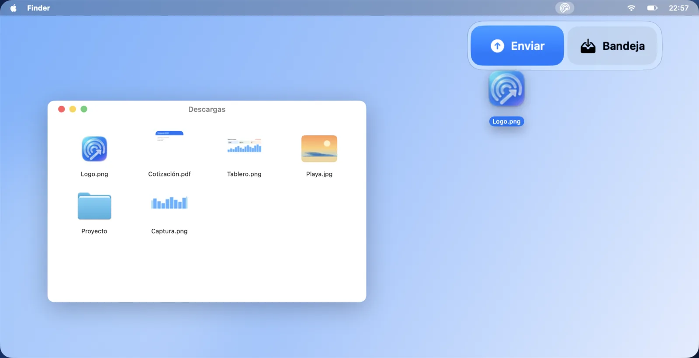
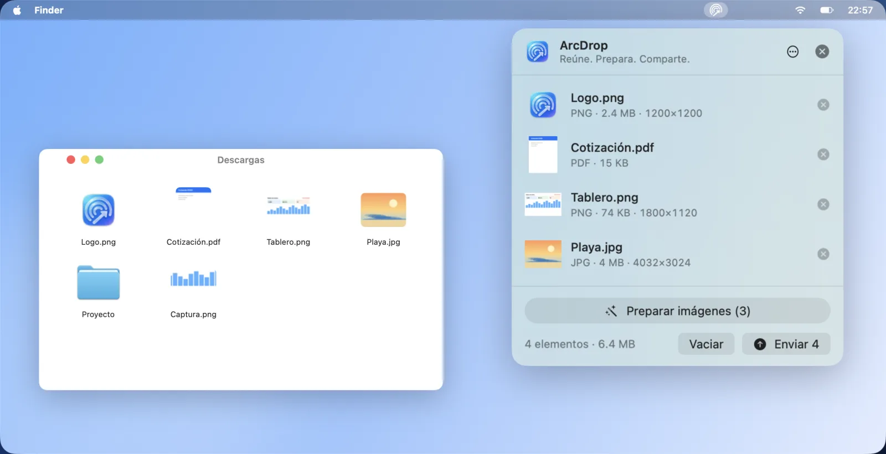
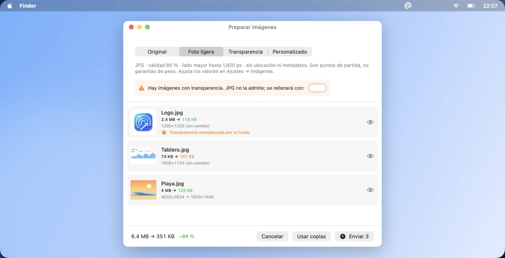
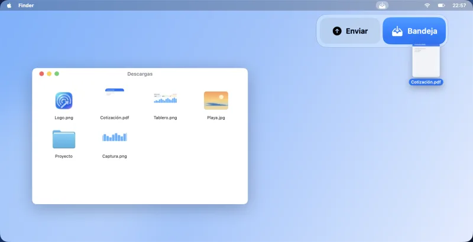
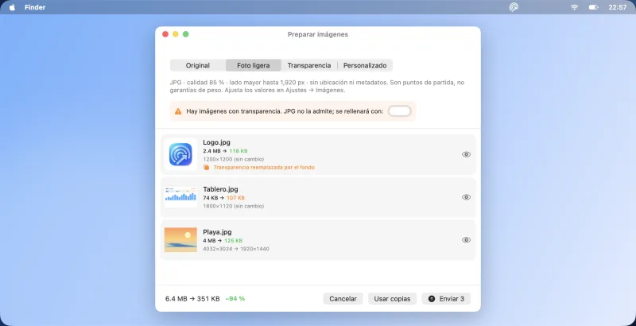
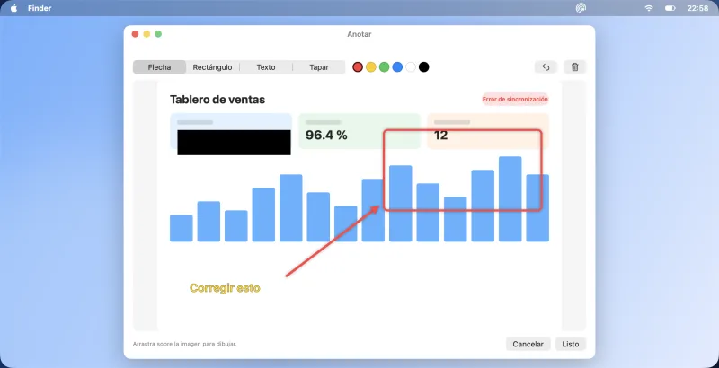
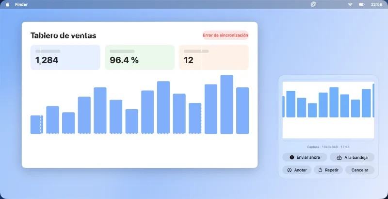
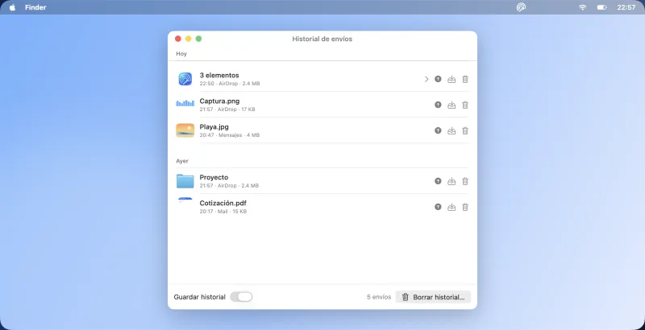
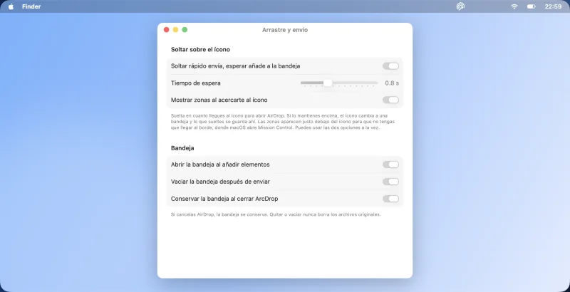

ArcDrop
Gratis
Para siempre
- Suelta en el ícono de la barra para enviar
- Suelta rápido para enviar, espera para guardar
- Bandeja durante la sesión
- Captura de región y acciones de Finder
- Tus últimos 3 envíos en el historial
ArcDrop para Mac
ArcDrop vive en tu barra de menú. Suelta un archivo en su ícono y AirDrop se abre al instante, listo para tu iPhone, iPad u otra Mac.

Suelta rápido o espera
Suelta en cuanto llegues al ícono para enviar. Si mantienes el archivo un momento encima, se guarda en tu bandeja. Dos zonas pequeñas aparecen justo debajo del ícono, así nunca empujas contra el borde superior, donde se abre Mission Control.
Todo lo que necesitas
Tu bandeja
Un logo de Descargas, una cotización de Documentos, una captura. Agrégalos en varios movimientos, revisa miniaturas y pesos, velos con Vista rápida y envía todo junto. Tus originales nunca se mueven.

Prepara imágenes
Convierte, reduce y comprime una copia antes de compartirla. Ve el peso antes y después, conserva la transparencia de los logos o elige el color de fondo, y quita la ubicación.

Hecha para tu Mac
Anota
Agrega flechas, recuadros y texto a una captura o imagen, y cubre datos sensibles con un bloque sólido que no se puede quitar en la copia exportada.






Precio
Sin suscripciones, sin anuncios y sin cuentas.
Gratis
Para siempre
Pago único
Un solo pago. Sin suscripción. Compartir en familia.
macOS 15 o posterior
Gratis en la Mac App Store, en 35 idiomas.
Muy pronto en la Mac App Store.